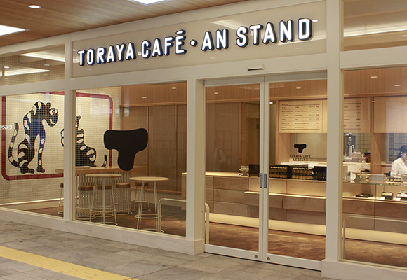

Sushimaru(鮨丸)
Blue Bottle Coffee
Toraya cafe an
stand
東京大人味發見
Day5-2015.07.27
< 新 宿 車 站>
店名：Toraya cafe an stand
営業時間：9:00-22:00(ラストオーダー21:30)
住址：151-0051東京都渋谷區千駄ヶ谷5-24-55
NEWoMan新宿2階
網址：
https://www.toraya-group.co.jp/toraya-cafe/shops/shinjuku/
這間是在ACD展有看到的設計，但是很遺憾的是因為時間不夠了只有經過卻沒有進去。

back